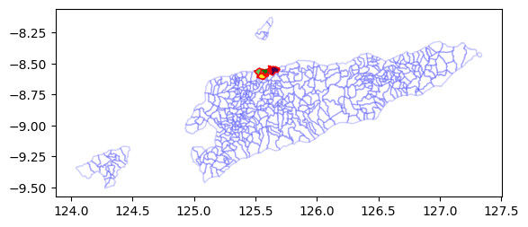
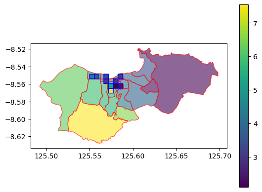
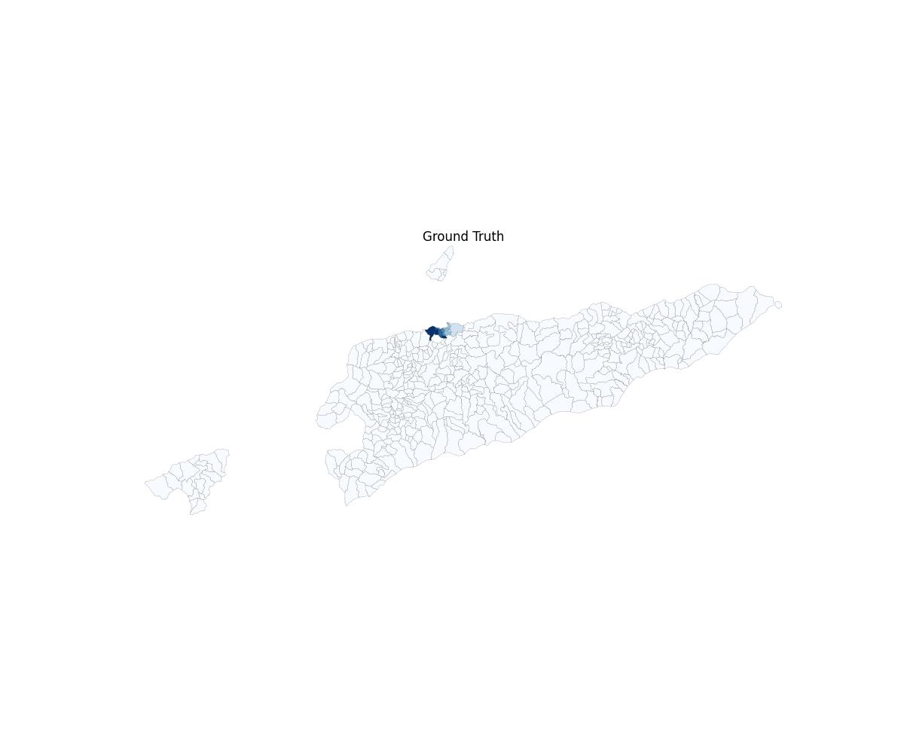
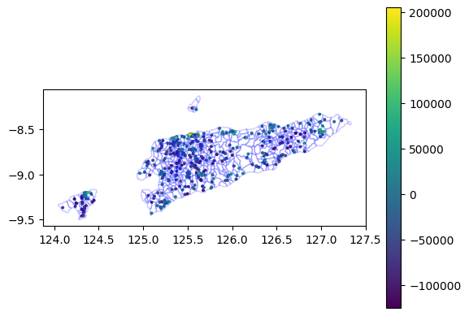

%reload_ext autoreload
%autoreload 2Explore Ookla Test Data
exploration of the sample Ookla data in
test_data/inputs/tl/ookla_tlandtest_data/inputs/tl/hdx_tl
import pandas as pd
import geopandas as gpdimport povertymapping.ookla_data_proc as ooklaimport sysConfiguration
setup a configuration object (which can be dictionary or any dict-like object)
The dhs configuration assumes a file structure like the following:
- These output files will be created
+
+save_path +
+ <ookla_feature_by_cluster>.csv # the preprocessed ookla dataset
# with the mean <feature> per cluster
# filename format:
# <country>_<year>_<quarter>_<feature>.csv
# e.g. tl_2019_2_avg_d_mbps.csv
+ <ookla_feature_by_admin_bounds>.geojson # the preprocessed ookla data
# with the mean <feature> per admin level
# (optional - created only
# if `plot_ookla_features` flag
# in config is True)
# filename format:
# <country>_<year>_<quarter>_<feature>_by_<admin_level>
# <admin_level> uses `adm_level`
# if `p_code` is True
# else uses `shape_label`
+ <ookla_feature_by_admin_image>.jpeg # the preprocessed ookla data as an image
# with the mean <feature> per admin level
# (also optional same as the geojson file above)- The input files are required:
+
+repo_path +
+ data_dir +
+ ookla_folder +
+ ookla_geojson_file # name of filtered ookla data csv file
# with the format
# <country>_<year>_<quarter>_ookla.geojson
+ hdx_folder +
+ boundary_file_folder # name of the shape file folder
# containing the admin boundaries
# inside this folder are the shape files
# from HDX
# (optional - required if
# `plot_ookla_features` in
# config is True)
+save_path +
+ <dhs_geo_zip_folder>_cluster_coords.csv # the geotagged cluster data
# created by process_dhs_data
# for the given country
# the dhs_geo_zip_folder should
# be the same as the one set
# for the config for dhs_process_data
ookla_config = dict(
save_path="../test_data/test_outputs/ookla",
repo_path="../test_data/inputs",
data_dir="tl",
country="tl",
ookla_folder="ookla_tl",
hdx_folder="hdx_tl",
dhs_geo_zip_folder="TLGE71FL",
crs="4683",
ookla_feature="avg_d_mbps",
boundary_file="new_suco_map",
year="2019",
quarter="2",
sample=False,
random_sample=False,
no_samples=60,
random_seed=42,
clust_rad=2000,
plot_ookla_features=True,
adm_level=3,
use_pcode=False,
shape_label='SUCO_NUMCD',
bins=6,
show_legend=False,
)
# you can also create a yaml file or json file
# and load it in.Run the process_ookla_data, passing your config object
# uncomment and run the following to clear out the preprocessed files
!rm -rf {ookla_config['save_path']}
!mkdir -p {ookla_config['save_path']}!cp ../data/outputs/dhs_tl/{ookla_config['dhs_geo_zip_folder']}_cluster_coords.csv {ookla_config['save_path']}/.%%time
ookla.process_ookla_data(ookla_config)Adding buffer geometry...100%|█████████████████████████████████████████████████████████████████████████████████| 455/455 [00:11<00:00, 39.69it/s]
/home/butchtm/work/povmap/unicef-ai4d-poverty-mapping/povertymapping/utils/data_utils.py:449: FutureWarning: The default value of numeric_only in DataFrameGroupBy.mean is deprecated. In a future version, numeric_only will default to False. Either specify numeric_only or select only columns which should be valid for the function.
geometry_and_cluster_features.groupby(group_indices).mean().reset_index()
/home/butchtm/work/povmap/unicef-ai4d-poverty-mapping/env/lib/python3.9/site-packages/geopandas/io/file.py:362: FutureWarning: pandas.Int64Index is deprecated and will be removed from pandas in a future version. Use pandas.Index with the appropriate dtype instead.
pd.Int64Index,CPU times: user 13.3 s, sys: 1.43 s, total: 14.7 s
Wall time: 13.9 s<Figure size 1200x1000 with 0 Axes>Check that the preprocessed files have been created
from pathlib import Pathookla_df = pd.read_csv(Path(ookla_config['save_path'])/'tl_2019_2_avg_d_mbps.csv')len(ookla_df)28ookla_df.head()| Unnamed: 0 | DHSID | avg_d_mbps | |
|---|---|---|---|
| 0 | 0 | TL201600000173 | 1.104000 |
| 1 | 1 | TL201600000174 | 2.075200 |
| 2 | 2 | TL201600000176 | 1.104000 |
| 3 | 3 | TL201600000179 | 3.279667 |
| 4 | 4 | TL201600000181 | 3.105000 |
ookla_by_adm_gdf = gpd.read_file(Path(ookla_config['save_path'])/'tl_2019_2_avg_d_mbps_by_suco_numcd.geojson')len(ookla_by_adm_gdf)456ookla_by_adm_gdf.head()| SUCO_NUMCD | DHSYEAR | DHSCLUST | ADM1FIPS | ADM1FIPSNA | ADM1SALBNA | ADM1SALBCO | ADM1DHS | DHSREGCO | LATNUM | ... | avg_d_mbps | index_right | REGIAO | DISTR_CODE | MUNI_NO_ | SUBDS_CODE | POLYGON_HA | Shape_Leng | Shape_Area | geometry | |
|---|---|---|---|---|---|---|---|---|---|---|---|---|---|---|---|---|---|---|---|---|---|
| 0 | 60405 | NaN | NaN | None | None | None | None | NaN | NaN | NaN | ... | NaN | NaN | NaN | NaN | NaN | NaN | NaN | NaN | NaN | POLYGON ((125.60983 -8.14371, 125.60988 -8.143... |
| 1 | 60403 | NaN | NaN | None | None | None | None | NaN | NaN | NaN | ... | NaN | NaN | NaN | NaN | NaN | NaN | NaN | NaN | NaN | POLYGON ((125.59262 -8.16130, 125.59329 -8.161... |
| 2 | 60404 | NaN | NaN | None | None | None | None | NaN | NaN | NaN | ... | NaN | NaN | NaN | NaN | NaN | NaN | NaN | NaN | NaN | POLYGON ((125.51124 -8.25234, 125.51274 -8.253... |
| 3 | 60402 | NaN | NaN | None | None | None | None | NaN | NaN | NaN | ... | NaN | NaN | NaN | NaN | NaN | NaN | NaN | NaN | NaN | POLYGON ((125.56938 -8.24539, 125.56993 -8.244... |
| 4 | 60401 | NaN | NaN | None | None | None | None | NaN | NaN | NaN | ... | NaN | NaN | NaN | NaN | NaN | NaN | NaN | NaN | NaN | POLYGON ((125.59583 -8.25395, 125.59715 -8.252... |
5 rows × 26 columns
len(ookla_by_adm_gdf)456ookla_by_adm_gdf.avg_d_mbps.isna().sum()432with_data = ookla_by_adm_gdf[ookla_by_adm_gdf.avg_d_mbps.notna()][['SUCO_NUMCD','DHSCLUST','avg_d_mbps','geometry']];
with_data.head()| SUCO_NUMCD | DHSCLUST | avg_d_mbps | geometry | |
|---|---|---|---|---|
| 59 | 60604 | 177.000000 | 2.104500 | POLYGON ((125.60584 -8.51985, 125.60585 -8.519... |
| 63 | 60606 | 191.800000 | 3.428391 | POLYGON ((125.60416 -8.54652, 125.60419 -8.546... |
| 71 | 60503 | 193.500000 | 6.245017 | POLYGON ((125.54797 -8.54527, 125.54792 -8.546... |
| 73 | 60501 | 198.000000 | 5.087806 | POLYGON ((125.54797 -8.54527, 125.54800 -8.545... |
| 74 | 60607 | 197.571429 | 3.860227 | POLYGON ((125.58711 -8.54789, 125.58717 -8.547... |
len(with_data)24orig_ookla_gdf = gpd.read_file(Path(ookla_config['repo_path'])/'tl'/'ookla_tl'/'tl_2019_2_ookla.geojson')orig_ookla_gdf.head()| quadkey | avg_d_kbps | avg_u_kbps | avg_lat_ms | tests | devices | index_right | ADM0_EN | ADM0_PCODE | ADM1_EN | ... | ADM2_EN | ADM2_PCODE | ADM3_EN | ADM3_PCODE | ADM3_REF | ADM3ALT1EN | ADM3ALT2EN | POINT_X | POINT_Y | geometry | |
|---|---|---|---|---|---|---|---|---|---|---|---|---|---|---|---|---|---|---|---|---|---|
| 0 | 3101122101023021 | 4704 | 5886 | 21 | 24 | 9 | 198 | Timor-Leste | TL | Dili | ... | Dom Aleixo | TL0605 | Kampung Alor | TL060502 | None | None | None | 125.561498 | -8.550816 | POLYGON ((125.55527 -8.54877, 125.56077 -8.548... |
| 1 | 3101122101023123 | 2688 | 4930 | 50 | 67 | 14 | 167 | Timor-Leste | TL | Dili | ... | Nain Feto | TL0602 | Gricenfor | TL060206 | None | None | None | 125.582836 | -8.554380 | POLYGON ((125.57725 -8.55420, 125.58274 -8.554... |
| 2 | 3101122101023310 | 1104 | 901 | 44 | 86 | 2 | 63 | Timor-Leste | TL | Dili | ... | Nain Feto | TL0602 | Bemori | TL060203 | None | None | None | 125.587389 | -8.561463 | POLYGON ((125.58274 -8.55963, 125.58823 -8.559... |
| 3 | 3101122101023020 | 6505 | 8518 | 30 | 64 | 4 | 146 | Timor-Leste | TL | Dili | ... | Dom Aleixo | TL0605 | Fatuhada | TL060501 | None | None | None | 125.553714 | -8.550279 | POLYGON ((125.54978 -8.54876, 125.55527 -8.548... |
| 4 | 3101122101023033 | 2683 | 5667 | 34 | 18 | 14 | 101 | Timor-Leste | TL | Dili | ... | Vera Cruz | TL0601 | Colmera | TL060105 | None | None | None | 125.572220 | -8.555532 | POLYGON ((125.56626 -8.55420, 125.57175 -8.554... |
5 rows × 21 columns
orig_ookla_gdf["avg_d_mbps"] = orig_ookla_gdf["avg_d_kbps"]/1000
orig_ookla_gdf["avg_u_mbps"] = orig_ookla_gdf["avg_u_kbps"]/1000import matplotlib.pyplot as pltax = plt.axes()
ax = ookla_by_adm_gdf.plot(facecolor='none',ax=ax,edgecolor='blue', alpha=0.2)
ax = with_data.plot(column='avg_d_mbps',edgecolor='red', ax=ax)
ax = orig_ookla_gdf.plot(column='avg_d_mbps',edgecolor='green', ax=ax)
ax = plt.axes()
ax = with_data.plot(column='avg_d_mbps',edgecolor='red', ax=ax, legend=True, alpha=0.6)
ax = orig_ookla_gdf.plot(column='avg_d_mbps',edgecolor='blue', ax=ax)
img_path = (Path(ookla_config['save_path'])/'new_suco_map_avg_d_mbps.jpeg').as_posix(); img_path'../data/outputs/ookla/new_suco_map_avg_d_mbps.jpeg'from PIL import Imageimg = Image.open(img_path); img
dhs_by_cluster = gpd.read_file('../data/outputs/dhs_tl/TLHR71DT_TLGE71FL_by_cluster.geojson')len(dhs_by_cluster)455dhs_by_cluster.columns.valuesarray(['DHSCLUST', 'Wealth Index', 'DHSID', 'DHSCC', 'DHSYEAR', 'CCFIPS',
'ADM1FIPS', 'ADM1FIPSNA', 'ADM1SALBNA', 'ADM1SALBCO', 'ADM1DHS',
'ADM1NAME', 'DHSREGCO', 'DHSREGNA', 'SOURCE', 'URBAN_RURA',
'LATNUM', 'LONGNUM', 'ALT_GPS', 'ALT_DEM', 'DATUM', 'F21', 'F22',
'F23', 'geometry'], dtype=object)dhs_data = dhs_by_cluster[["DHSCLUST","DHSID","Wealth Index","geometry","LATNUM","LONGNUM"]].copy()
dhs_data.head()| DHSCLUST | DHSID | Wealth Index | geometry | LATNUM | LONGNUM | |
|---|---|---|---|---|---|---|
| 0 | 1 | TL201600000001 | 32166.600000 | POINT (125.56738 -8.71202) | -8.712016 | 125.567381 |
| 1 | 2 | TL201600000002 | -34063.923077 | POINT (125.59022 -8.73023) | -8.730226 | 125.590219 |
| 2 | 3 | TL201600000003 | 39230.590909 | POINT (125.55640 -8.74134) | -8.741340 | 125.556399 |
| 3 | 4 | TL201600000004 | -82140.227273 | POINT (125.53516 -8.81129) | -8.811291 | 125.535161 |
| 4 | 5 | TL201600000005 | -56203.423077 | POINT (125.47322 -8.79159) | -8.791590 | 125.473219 |
dhs_data.crs<Geographic 2D CRS: EPSG:4326>
Name: WGS 84
Axis Info [ellipsoidal]:
- Lat[north]: Geodetic latitude (degree)
- Lon[east]: Geodetic longitude (degree)
Area of Use:
- name: World.
- bounds: (-180.0, -90.0, 180.0, 90.0)
Datum: World Geodetic System 1984 ensemble
- Ellipsoid: WGS 84
- Prime Meridian: Greenwichfrom povertymapping.utils.data_utils import add_buffer_geomadd_buffer_geom(dhs_data, r=ookla_config['clust_rad'])Adding buffer geometry...100%|█████████████████████████████████████████████████████████████████████████████████| 455/455 [00:09<00:00, 46.76it/s]ax = plt.axes()
ax = dhs_data.plot(column="Wealth Index", ax=ax, legend=True)
ax= ookla_by_adm_gdf.plot(facecolor='none',ax=ax,edgecolor='blue', alpha=0.2)